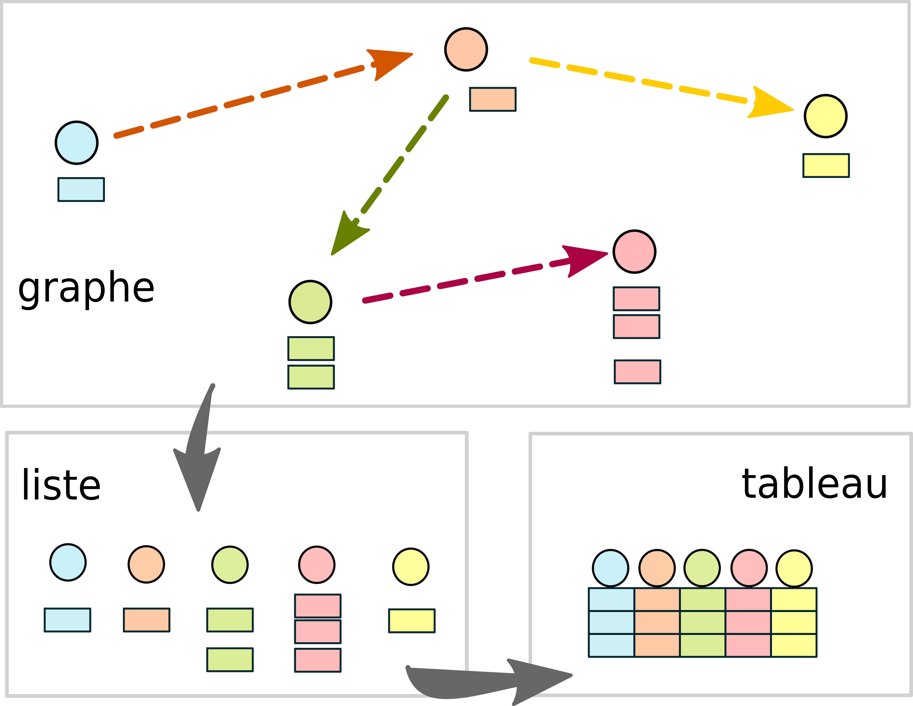

Rows: 1011 Columns: 4
── Column specification ────────────────────────────────────────────────────────
Delimiter: ","
chr (4): person, deathdate, link, personLabel
ℹ Use `spec()` to retrieve the full column specification for this data.
ℹ Specify the column types or set `show_col_types = FALSE` to quiet this message.
# A tibble: 1,011 × 4
person deathdate link personLabel
<chr> <chr> <chr> <chr>
1 http://www.wikidata.org/entity/Q124571 1819-05-18T00:00:0… http… Jean-Pierr…
2 http://www.wikidata.org/entity/Q124571 1819-05-12T00:00:0… http… Jean-Pierr…
3 http://www.wikidata.org/entity/Q127931 1929-01-01T00:00:0… http… Louis Rous…
4 http://www.wikidata.org/entity/Q162597 1991-06-29T00:00:0… http… Henri Lefe…
5 http://www.wikidata.org/entity/Q176060 1889-07-13T00:00:0… http… Victor-Ado…
6 http://www.wikidata.org/entity/Q203719 1815-09-28T00:00:0… http… Nicolas De…
7 http://www.wikidata.org/entity/Q2636575 1892-06-29T00:00:0… http… Ernest Mou…
8 http://www.wikidata.org/entity/Q2707645 1955-07-24T00:00:0… http… Emmanuel d…
9 http://www.wikidata.org/entity/Q2718878 1957-09-13T00:00:0… http… Guillaume …
10 http://www.wikidata.org/entity/Q2745819 1886-10-22T00:00:0… http… Ernest Des…
# ℹ 1,001 more rows
Wikidata: difficultés d’appropriation et de collecte
👀 ce qu’on appréhende directement: le web documentaire
💭 difficultés liées à la structure des données en graphes
🔮 métadonnées intégrées aux données
🧠️ transformation en données tabulaires pour analyses
⛏️ difficultés de collecte (SPARQL)

Du graphe de connaissances au tableau de données
Package glitter: objectifs
🎯 Promouvoir l’usage (exploration, recueil, analyse) des données du web sémantique pour les chercheur·se·s et étudiant·e·s usagers de R, en:
facilitant l’écriture des requêtes SPARQL
facilitant l’envoi des requêtes
favoriser l’analyse/valorisation ultérieure dans R
En tant que “Domain Specific Language” (DSL), glitter correspond à une syntaxe et des fonctions plus proches du tidyverse et base R que de SPARQL.
Cette table comprend 1061 lignes (films avec localisation narrative, coordonnées associées et affiche). Voici les premières:
df_films_show
# A tibble: 6 × 6
film_label loc_label coords image subject_label year
<chr> <chr> <chr> <chr> <chr> <int>
1 The Winds of the Aures Algeria Point(1.0 28.0) http://c… "Algerian Wa… 1966
2 The Repentant Algeria Point(1.0 28.0) http://c… "" 2012
3 Under Two Flags Algeria Point(1.0 28.0) http://c… "" 1936
4 Algiers Algeria Point(1.0 28.0) http://c… "" 1938
5 Cabiria Algeria Point(1.0 28.0) http://c… "" 1914
6 The Sheik Algeria Point(1.0 28.0) http://c… "" 1921
Carte mondiale des lieux de fiction (films avec affiche)
Dimension de la requête?
Combien de films dans Wikidata:
tib <-spq_init() %>%spq_add("?film wdt:P31 wd:Q11424") %>%spq_summarise(n_films=n()) %>%# Résume en comptant le nombre de films puisspq_perform() # Envoie la requête
# A tibble: 1 × 1
n_films
<int>
1 332102
Temps de réponse du serveur limité par un paramètre de Time out:
# A tibble: 260 × 3
film_label genre_label actor_label
<chr> <chr> <chr>
1 The Winds of the Aures war film "Mustapha Kateb"
2 The Winds of the Aures war film "Mohamed Chouikh"
3 The Winds of the Aures war film "Aïcha Adjouri"
4 The Winds of the Aures war film "Hassan El-Hassani"
5 The Winds of the Aures war film "Hadj Smaine Mohamed Seghir"
6 The Repentant drama film ""
7 Under Two Flags adventure film "Thomas Beck"
8 Under Two Flags adventure film "Rolfe Sedan"
9 Under Two Flags adventure film "Jean De Briac"
10 Under Two Flags adventure film "Gino Corrado"
# ℹ 250 more rows